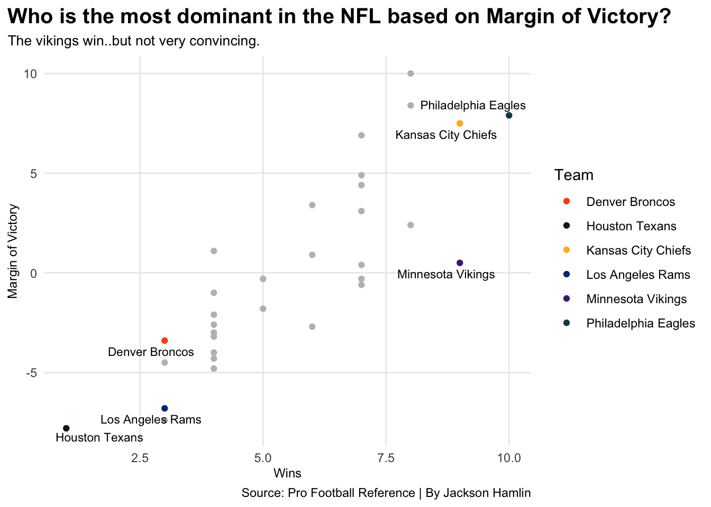

Are the Minnesota Vikings a team to be worried about in the postseason?
football
code
analysis
Author
Jackson Hamlin
Published
November 6, 2022
When you think of NFC powerhouses, you certainly don’t think of the Minnesota Vikings. The Eagles, Packers, 49ers may come into mind, but Minnesota? No. The 2022 Minnesota Vikings are 9-2 and they are on top of the NFC North by a longshot.
There has been some skepticism about this Vikings team this year because their wins haven’t been all that convincing. Oh, and let me add, they got destroyed by the Dallas Cowboys 40-3 just a couple of weeks ago. The Vikings win games, but something just seems off about this team.
So, are the Vikings the real deal?
Pro Football Reference provides us with any and every single piece of data from the NFL that we need. This data set includes valuable numbers to pick apart this Minnesota team such as point differential, margin of victory, and much more.
First off, lets look at where the Vikings stand in the NFL by their record.
Hmm.. Vikings have the second best record in the NFL. Right behind the Eagles, and if you haven’t watched the Eagles this year, you are missing out. The Chiefs are tied for second, as expected, and continue to look as dominant as usual.
Strength of schedule in any sport plays a huge role in deciding if a team is actually the real deal or not. Lets go ahead and look at the top ten hardest schedules in the NFL this season.
Code
bestteams2 <- nflstats %>%select(Tm, SoS, W, L) %>%top_n(10, wt =SoS ) %>%arrange(desc(SoS))vikingssuck <- bestteams2 %>%filter(Tm =="Minnesota Vikings") %>%select(Tm, SoS, W, L) ggplot() +geom_bar(data=bestteams2, aes(x=reorder(Tm, SoS),weight=SoS)) +geom_bar(data=vikingssuck,aes(x=reorder(Tm, SoS),weight=SoS), color="#FFC62F", fill="#4F2683") +scale_y_continuous(labels=comma) +labs(x ="Team",y ="Strength of Schedule",title ="Who has the toughest path to the Playoffs this season?",subtitle ="The Vikings have the 7th hardest schedule.",caption ="Source: Pro Football Reference | By Jackson Hamlin" ) +theme_minimal() +coord_flip()+theme(plot.title =element_text(size =15, face ="bold"),axis.title =element_text(size =9),plot.subtitle =element_text(size =10),panel.grid.minor =element_blank(),plot.title.position ="plot" )
At this point, shutting off my computer and believing the Vikings are the real deal would be a good idea, but I still have hope. This season, the Vikings have the seventh hardest schedule in the NFL. I still don’t believe this, and if you are wondering, this is coming from a Viking’s fan. Lets dig in deeper and compare the Vikings to the Eagles and Chiefs based off of their point differentials this season.
Code
Mn <- nflstats %>%filter(Tm =="Minnesota Vikings")Pd <- nflstats %>%filter(Tm =="Philadelphia Eagles")Kc <- nflstats %>%filter(Tm =="Kansas City Cheifs")Mn1 <-c("Points Allowed"=257, "Points Scored"=262, 50)Pd1 <-c("Points Allowed"=216, "Points Scored"=303, 50)Kc1 <-c("Points Allowed"=243, "Points Scored"=326)iron(waffle(Mn1/2,rows=7,title="Minnesota's Point Differential",xlab="Minnesota Vikings",colors =c("#4F2683", "red", "white")) +labs(title="The NFL's best of the best and their point differentials.", subtitle="Who is allowing their opponents to stay close?") +theme(plot.title =element_text(size =16, face ="bold"),axis.title =element_text(size =10),axis.title.y =element_blank()),waffle(Pd1/2,rows=7,xlab="Philadephia Eagles",colors =c("#004C54", "red","white")), waffle(Kc1/2,rows=7,xlab="Kansas City Chiefs\n1 square = 5 points",colors =c("#FFB81C", "red"))+labs(caption="Source: Pro Football Reference | By Jackson Hamlin"))
Now we are onto something. Based off their point differentials compared to the other two best teams, it is clear to see that Minnesota is letting their opponents score a lot, and they are just barely scoring more. As for the Eagles and Chiefs, they are scoring a lot more points then their opponents, like good teams do.
Lets go ahead and look at Minnesota’s margin of victory compared to the best and worst teams in the NFL this season.
Code
scatter <- nflstats %>%select(Tm, MoV, W) Vikings <- scatter %>%mutate(Team ="Minnesota Vikings") %>%filter(Tm =="Minnesota Vikings") %>%select(W, MoV, Team)Philly <- scatter %>%mutate(Team ="Philadelphia Eagles") %>%filter(Tm =="Philadelphia Eagles") %>%select(W, MoV, Team)Chiefs <- scatter %>%mutate(Team ="Kansas City Chiefs") %>%filter(Tm =="Kansas City Chiefs") %>%select(W, MoV, Team)Texans <- scatter %>%mutate(Team ="Houston Texans") %>%filter(Tm =="Houston Texans") %>%select(W, MoV, Team)Rams <- scatter %>%mutate(Team ="Los Angeles Rams") %>%filter(Tm =="Los Angeles Rams") %>%select(W, MoV, Team)Broncos <- scatter %>%mutate(Team ="Denver Broncos") %>%filter(Tm =="Denver Broncos") %>%select(W, MoV, Team)combined <-bind_rows(Broncos,Rams,Texans,Chiefs,Philly,Vikings)ggplot() +geom_point(data=scatter, aes(x=MoV, y=W), color="grey") +geom_point(data=combined, aes(x=MoV, y=W, color=Team)) +geom_text_repel(data=combined, aes(x=MoV, y=W, label=Team),size=3) +scale_color_manual(values=c("#FB4F14", "#03202F", "#FFB81C", "#003594", "#4F2683", "#004C54")) +labs(x ="Margin of Victory",y ="Wins",title ="Who is the most dominant in the NFL based on Margin of Victory?",subtitle ="The vikings win..but not very convincing.",caption ="Source: Pro Football Reference | By Jackson Hamlin" ) +theme_minimal() +coord_flip()+theme(plot.title =element_text(size =15, face ="bold"),axis.title =element_text(size =9),plot.subtitle =element_text(size =10),panel.grid.minor =element_blank(),plot.title.position ="plot" )

I think we cracked the code here. Are the Vikings winning football games? Yes, but not by much, at all. The Vikings are barely holding on, and they are averaging winning football games by literally two points a game. The best teams are winning by more than two possessions a game, but the Vikings are just squeaking these victories out. Will this hold up in the post season? History and stats say no, but football can be a weird game. Only time will tell.